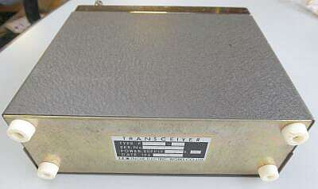
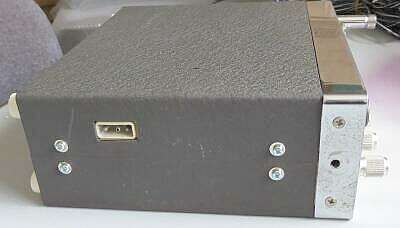
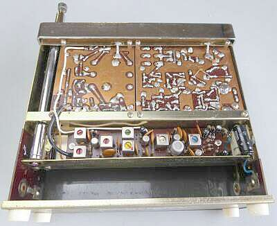
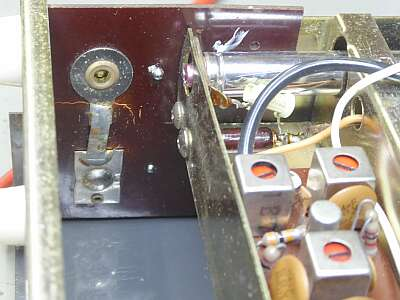
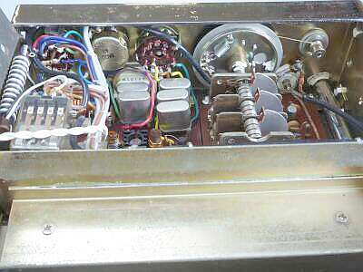
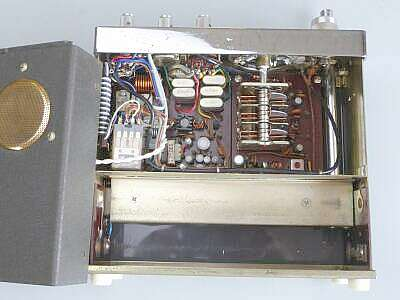
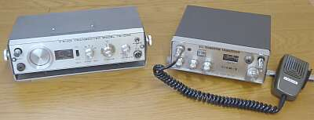

 |
底面には、なにもありません
シンプルそのものです
このまま縦置きして、何も問題なく運用できます |
 |
外部電源を接続するためのコネクタは、横面に用意されています
昔懐かしい、フィーダーコンセント（３P）です
くれぐれも＋接地の本機、場合によっては要注意です
ビスは、入手時付いていなかったので、手持ちの旧ＪＩＳを使っています |
 |
本機は、合計３枚の基板で構成されています
受信１ｓｔ-ＩＦ段以降は、電池収納スペースの裏側に基板１枚で配置されています
その右端に、外部電源接続コネクタが配されています
|
 |
電池ホルダの部分
ベークライトの板を加工してあるのですが、ケースにはハトメで留まっています
このハトメが経年変化で留めが緩んで、ベークライトの板が外れるようになっていました
電池を装着してしまえば問題ないかもですが、気になりますので真鍮製のハトメをいいことに、内側に半田を盛って抜けないようにしました
見えている基板は、受信１ｓｔ-ＩＦ以降の部分です（１ｓｔ-ＩＦから２ｎｄ-ＩＦへの変換部分） |
 |
３連ＶＣは、受信ＲＦ同調と、１ｓｔＯＳＣ用です
クリスタルは、送信用 ５波 フル実装！です
受信ダイヤルは、お決まりの糸掛け式です |
 |
見えている左側基板は送信部と、送受兼用のＡＦ部です
右側基板は受信部（ＲＦ－１ｓｔＭｉｘ）です
電池ケース部のシールド板の下側に、受信１ｓｔＩＦから検波までの基板１枚が収まっています
下のスペースは乾電池収納エリアです
ご覧のようにケースを開けないと電池交換ができません
単一電池を使用します
|

フロントスピーカーのＴＲ-１０００
下向きケース取付スピーカーのＦＤＡＭ-２
大きな音量が得られるのは、ＦＤＡＭ-２です |
近い時代の製品、ＴＲ-１０００と比較ですが、本機が随分コンパクトです
ＴＲ-１０００では、電池交換用の窓が用意されています
その分使い勝手は良いのですが、如何せん大きく重たいのが難点です
ユーザーインターフェイス重視は同じでも、その切り口が２社違ところが興味深いです
デザインを専任者が行うのか、無線機の設計者が行うのか・・・そんな違いがあるのかもしれませんね |
入手後、しばらく放置してしていたものです
送信について
意外なことに、入手時そのままで、すんなりパワーが出ました、送信動作ＯＫです
ただし１Wは無理で、０．７～０．８W程度
ところが受信については全く音が出ません
ＣＡＬを取るとＳメーターはバッチシ振れます
どうやらＡＦ部がＮＧなようです
試しに送信をモニタしたところ、やはり変調がかかりません |
ＡＦ信号を、ＡＦ-VOLからＡＦユニットをオシロを使って追いました
ファイナル直前までは正常そうです
まず、順当に？ＡＦファイナルＴｒを疑いました、２ＳＢ２２０プッシュです
外してチェックしましたが正常です
＋接地なもので、日頃と感覚が違います
エミッタ／コレクタ間の電圧が異常に低い・・・・よくよく目を凝らして見たら、エミッタ／アース間の多分５０Ωと思われる1/4Ｗ抵抗器が損傷していました
犯人発見です、1/2Ｗ５１Ω抵抗器に交換、これで正常と思われる動作となりました |
|
調整の結果
送信
５０.１５～５０.８ＭＨｚ 内蔵されていた５クリスタルの範囲で均一化し、おおよそ０.７Ｗ
受信
３０％変調 1μV入力で、ぎりぎりS/N１０ｄｂ（この当時としては、非常に高感度だと思います）
得られる音量も十分です
回路図ほか資料が全く無い中での修理、調整の結果です |